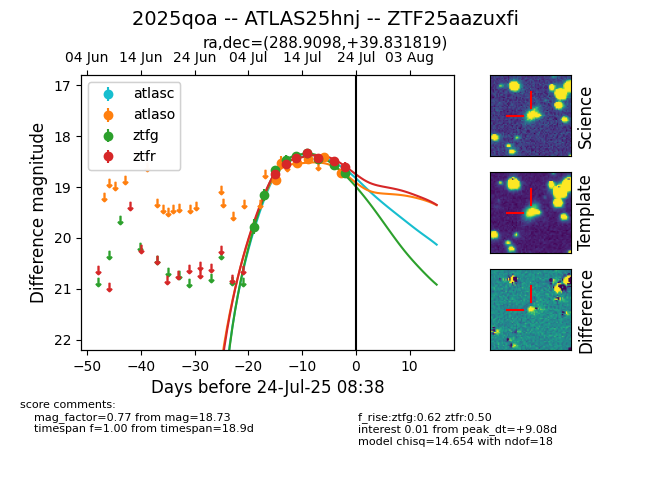

Target ZTF25aazuxfi at 2025-07-24 08:38, see:
FINK: fink-portal.org/ZTF25aazuxfi
Lasair: lasair-ztf.lsst.ac.uk/objects/ZTF25aazuxfi
ALeRCE: alerce.online/object/ZTF25aazuxfi
TNS: wis-tns.org/object/2025qoa
YSE: ziggy.ucolick.org/yse/transient_detail/2025qoa
alt names
ZTF25aazuxfi (ztf,fink)
2025qoa (tns,yse)
ATLAS25hnj (atlas)
coordinates:
equatorial (ra, dec) = (288.9098,+39.83182)
galactic (l, b) = (71.4109,+12.71127)
photometry
last atlasc=18.70, atlaso=18.73, ztfg=18.73, ztfr=18.60
1 atlasc, 6 atlaso, 9 ztfg, 7 ztfr detections
